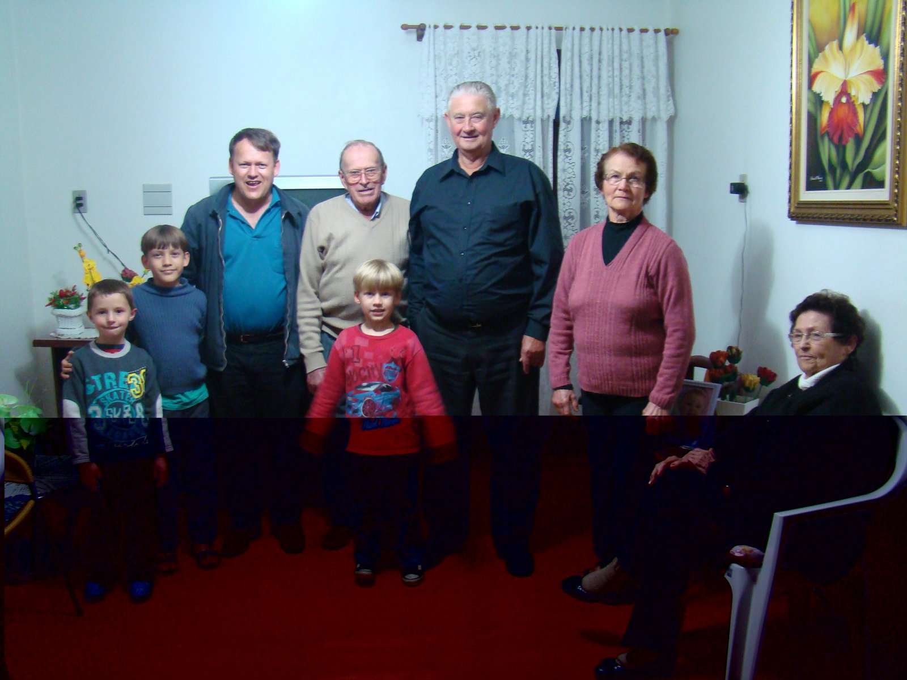
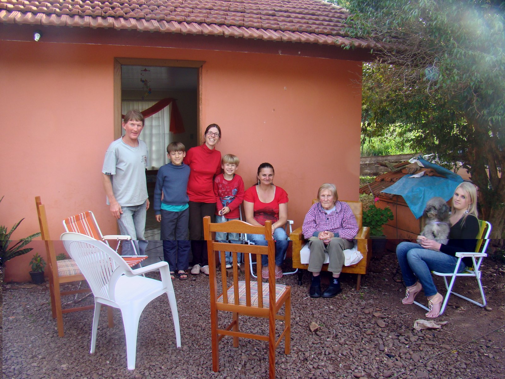
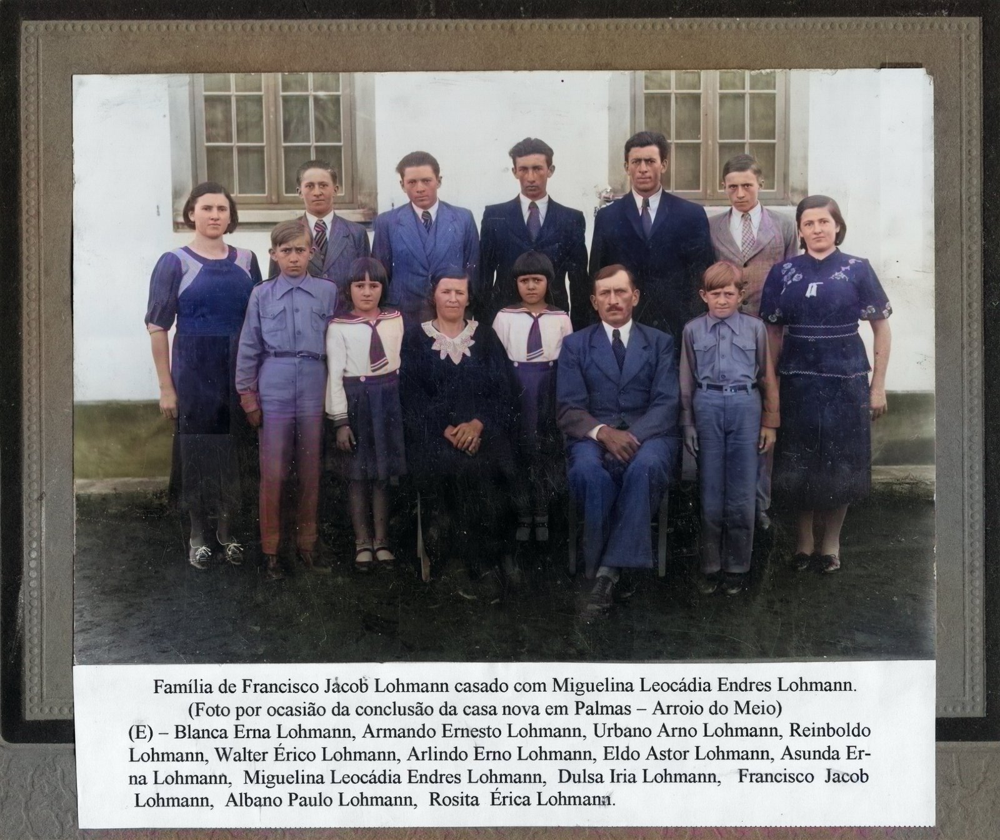

Teil IV · Bárbaras Horizonte
Kapitel 12 — Von der Fazenda Lohmann zu den Friedhöfen von Estrela — Das Taquari-Tal
Die Flüsse des Südens haben ein langes Gedächtnis. Wer an ihren Ufern wohnt, braucht auch eines.
29,3° S · 51,9° W, Palmas, Arroio do Meio, RS
Die Familie sagt, Francisco Jacob Lohmann und Miguelina Leocádia Endres hätten zwölf Kinder gehabt. Die Register geben zweien von ihnen Geburtsdaten, die vor der Hochzeit der Eltern liegen, und führen zwei Walter. Auf der Fotografie vor dem neuen Haus habe ich elf gezählt.
September 2012
Arroio do Meio und Estrela, Rio Grande do Sul, 25. September 2012
Wir kamen im Frühling ins Taquari-Tal. Die Hügel waren tiefgrün, und der Fluss zog breit zwischen ihnen dahin. Matheus war zehn, Lucas sieben. Wir hatten eine Liste mit Namen dabei. Das Ziel der Reise war leicht zu sagen und schwer zu erfüllen: die Geschwister von Oma Rosita zu finden, solange sie noch lebten.
Von den zwölf Kindern von Francisco Jacob Lohmann und Miguelina Leocádia Endres lebten 2012 noch einige, verstreut über Arroio do Meio, Estrela und die Umgebung, in Kolonistenhäusern und Kleinstadthäusern. Nach den Daten, die FamilySearch uns liefert, war Onkel Urbano etwa achtundneunzig Jahre alt, Onkel Armando etwa sechsundneunzig, Tante Sunta etwa einundneunzig und der Jüngste, Onkel Arlindo, achtundachtzig. Sie waren die letzte Generation, die Francisco und Miguelina mit eigenen Augen gesehen hatte.
Die Gespräche jener Tage werde ich hier nicht nachzeichnen. Ich habe sie nicht aufgenommen, so wie ich meine Mutter bei der Eisernen Hochzeit aufgenommen habe, und meine Erinnerung daran ist die eines bewegten Besuchers, nicht die eines Protokollführers. Es wäre leicht, den Onkeln und Tanten schöne Sätze über das Hochwasser von 1941, über den verwitweten Vater oder über das neue Haus in den Mund zu legen. Das tue ich nicht. Was ich tun kann: die Fotografien beschreiben, die über das, was sie zeigen, nicht lügen, und sagen, was ich empfunden habe.
Der Besuch bei Onkel Armando fand auf der Veranda eines Kolonistenhofs statt. Auf dem Foto sitzt er auf einem niedrigen Stuhl, in einem dunklen Wollpullover, das weiße Haar zerzaust, mit dem schiefen Lächeln eines Mannes, den etwas belustigt, das außerhalb des Bildes geblieben ist. Ich sitze neben ihm, in einer Jacke, den Arm um seine Schultern gelegt. Die Bildunterschrift der Familie sagt, dass Bárbara bei diesem Besuch dabei war. Im Hintergrund eine gemauerte Säule mit abblätterndem Putz, eine alte Satellitenschüssel, ein Backsteinschuppen, die Weide und der bewaldete Hügel. Der Himmel ist weiß. Es ist die Landschaft fast aller deutschen Kolonien im Süden, und ich erkannte sie wieder, als wäre es die von Vidal Ramos.

Im Haus von Onkel Urbano, dem ältesten der Geschwister, die wir trafen, zeigt das Foto eine gelbe Veranda mit einem Topf Orchideen im Hintergrund. Er sitzt in der Mitte, in einem gemusterten Pullover und einer Anzughose, die großen Hände im Schoß gefaltet, mit dem festen Blick eines Mannes, der fast ein Jahrhundert gesehen hat. Neben ihm eine Frau in einer lila Bluse. Ich stehe links, Matheus auf dem Arm, der mit beiden Daumen nach oben zeigt, und Lucas im roten T-Shirt steht hinter uns auf einem Strohstuhl, lacht und überragt alle. Dahinter stehen weitere Verwandte aus dem Haus. Wie in der Garage in Joinville verbindet das Bild weit entfernte Enden derselben Linie: meine Söhne am jüngsten, einen Urgroßonkel am ältesten.

Der Besuch bei Onkel Arlindo war am Abend, in einem Zimmer mit Spitzengardinen, einem Bild einer gelben Orchidee an der Wand und rotem Teppichboden. Auf dem Foto, mit Blitz aufgenommen, stehen wir alle, aneinandergelehnt wie auf einem Abschlussfoto, außer einer alten Dame, die in der Ecke sitzen geblieben ist. Lucas steht genau in der Mitte, im roten T-Shirt, Matheus im blauen Pullover links. Onkel Arlindo starb am 7. Februar 2018 in Estrela, einen Tag nach seinem vierundneunzigsten Geburtstag. Am Tag davor, dem 6. Februar, stand ich am Schalter des Standesamts Maxhütte-Haidhof in der Oberpfalz, den Geburtseintrag meines Großvaters in den Händen. Die beiden Daten sind in meinem Kalender für immer verbunden.

Das letzte Foto zeigt Tante Sunta, Asunda Erna Lohmann. Es ist mir das liebste, wegen eines Details. Sie sitzt in einem abgewetzten Ledersessel auf einem Kieshof vor einem orange gestrichenen Haus, die Hände gefaltet, mit dem ernsten Gesicht eines Menschen, der sich nicht gern fotografieren lässt. Um sie herum stehen und sitzen Verwandte aus dem Haus und eine junge Frau mit einem Hündchen auf dem Schoß. Matheus und Lucas stehen an der Tür, und die Bildunterschrift der Familie hält fest, dass Bárbara sie bei diesem Besuch begleitete. Im Vordergrund stehen, Tante Sunta zugewandt, vier leere Stühle: einer aus weißem Plastik, zwei aus Holz, ein gestreifter Strandstuhl. Dort hatte das Gespräch stattgefunden. Wer für das Foto aufgestanden war, hatte die Stühle so stehen lassen, wie sie waren, ihr zugewandt.

Hier spricht Bárbara.
Ich wusste nicht genau, was mich erwartete. Es waren die Geschwister meiner Großmutter, aber ich kannte sie fast nur dem Namen nach. Was mich ergriff, waren die Gesichter. In jedem von ihnen war etwas von der Oma: wie sie die Hände faltete, das Kinn, der leicht misstrauische Blick in die Kamera. Es war, als sähe ich meine Großmutter auf vier Menschen verteilt. Ich wollte, dass die Jungen genau hinschauen, auch wenn sie nicht alles verstanden. Ich dachte, eines Tages würden sie sich daran erinnern wollen, dass sie dort gewesen sind.
In jenen Tagen besuchten wir auch die Friedhöfe von Estrela und Arroio do Meio. Ich habe weniger Einzelheiten davon behalten, als mir lieb wäre, und deshalb stützt sich das, was ich in den folgenden Abschnitten über die Gräber schreibe, auch auf die Fotografien und die Datenblätter der CAPEF, des genealogischen Forschungszentrums in Lajeado, das die Gründerfamilien von Estrela rekonstruiert hat.
Von Harderode auf die Hiran
Harderode, Herzogtum Braunschweig, September 1846
Harderode ist ein kleines Dorf in den Hügeln östlich der Weser, bei Hameln, der Stadt des Rattenfängers. Dort lebten zu Beginn des 19. Jahrhunderts Johann Friedrich Christian Lohmann, geboren am 23. Oktober 1788, und Sophie Dorothee Elizabeth Schrader, geboren am 16. Februar 1796. Sie sind eure fünffachen Urgroßeltern, sieben Generationen über Matheus und Lucas. Johann Friedrich war Lehrer, laut dem Datenblatt der CAPEF, und das passt zu dem Stolz, den der Lohmann-Familienverband jener Gegend auf seine Abstammung hatte. In einem Dokument von 1938 hieß es, seit einem gewissen Tönnis Lohmann, Schulmeister und Küster um 1640, habe die Sippe „in allen Verzweigungen” Lehrer und Pfarrer hervorgebracht. Ich lese dieses Dokument mit zweifacher Vorsicht. Die eine ist das natürliche Misstrauen gegenüber jeder Genealogie, die sich selbst rühmt. Die andere ist das Unbehagen über das Datum: 1938 hatte in Deutschland das Interesse an Wappen und „Abstammung” einen Zusammenhang, den ich nicht übergehen kann. Aber der Beruf des Vaters von Georg Karl Maximilian ist eine einfache Tatsache, und die halte ich fest.
Ihr Sohn Georg Karl Maximilian Lohmann wurde am 12. Juli 1821 in Harderode geboren. Er war Kaufmann. Am 4. September 1846, mit fünfundzwanzig Jahren, schiffte er sich an Bord der Hiran nach Brasilien ein. Die CAPEF berichtet ein Detail, das ich außergewöhnlich finde: Die Hiran war ein Frachtschiff und hatte außer dem Kapitän und der Mannschaft nur zwei Passagiere an Bord, Georg Karl und einen Herrn Berwig. Ich vergleiche das mit der Formosa von 1913, die die Haas in der dritten Klasse mit Hunderten anderer Auswanderer brachte, und mit den Briggs von 1828 und 1847, vollgestopft mit Familien aus dem Hunsrück und von der Mosel. Euer vierfacher Urgroßvater hat den Atlantik fast allein überquert, zwischen Kisten und Fässern, in einer Zeit, in der die Reise drei Monate dauerte.
Ich stelle mir die Überfahrt vor, und ich sage dazu, dass es Vorstellung ist: ein junger Mann aus Braunschweig, Lehrersohn, über die Reling eines Frachtseglers gebeugt, der sieht, wie das Meer beim Überqueren des Äquators die Farbe wechselt, und spürt, wie die Luft von Woche zu Woche feuchter und wärmer wird. Falls er eine Ahnung von Meteorologie hatte, und ein Lehrersohn hatte sie vielleicht, wird er in der Praxis gelernt haben, was wir an der Universität lehren: dass der Nordostpassat die Segelschiffe nach Süden schiebt, dass die äquatoriale Kalmenzone sie festhält und dass der Südostpassat sie bis an die Küste Brasiliens trägt. Die Hiran erreichte Rio de Janeiro am 5. Dezember 1846, zweiundneunzig Tage nach der Abfahrt.
Das Datenblatt der CAPEF sagt, es sei der Geburtstag der Prinzessin Dona Isabel gewesen, mit Feierlichkeiten am Hof. Hier muss der Ermittler die Legende berichtigen. Prinzessin Isabel wurde am 29. Juli 1846 geboren. Im Dezember hatte sie keinen Geburtstag, sie war ein vier Monate alter Säugling. Möglicherweise waren die erinnerten Feste die zum Geburtstag von Kaiser Dom Pedro II. am 2. Dezember, die sich über einige Tage hinzogen. Möglich ist auch, dass sich das Detail erst später an die Geschichte geheftet hat. Am Wesentlichen ändert das nichts, aber es zeigt, wie Familienerzählungen sich mit der Zeit ausschmücken. Auch dieses Buch wird seine Ausschmückungen haben. Ich hoffe, ihr findet sie.
Archivkarte: Georg Karl Maximilian Lohmann (FamilySearch 27QQ-TM9). Geburt: 12.07.1821, Harderode (Braunschweig). Auswanderung: 04.09.1846 auf dem Frachtschiff Hiran, mit nur einem weiteren Passagier (Herr Berwig). Ankunft in Rio de Janeiro: 05.12.1846. Heirat: 06.05.1849 in Kaffeeschneis (Picada Café, damals São Leopoldo) mit Bárbara Wingert (05.07.1828–24.11.1915). Tod: 28.07.1899, Linha Lenz, Estrela (RS). Quelle: CAPEF, Famílias fundadoras de Estrela — Família Lohmann. Vorbehalt: Die Verknüpfung des Ankunftsdatums mit dem Geburtstag der Prinzessin Isabel ist nicht haltbar (sie wurde am 29.07.1846 geboren).
Von Rio zog Georg Karl weiter in den Süden, in die alte Kolonie São Leopoldo, gegründet 1824. In Kaffeeschneis, der heutigen Gemeinde Picada Café, heiratete er am 6. Mai 1849 Bárbara Wingert, geboren am 5. Juli 1828. Ich nenne den Namen eigens, weil er mich beim ersten Lesen lächeln ließ. Bárbaras dreifache Urgroßmutter hieß ebenfalls Bárbara.
Das Paar hatte zwölf Kinder. Um ihnen Land zu sichern, tätigte Georg Karl 1870 den Kauf, der einem Ort seinen Namen gab. Nach der Geschichte, die Forscherinnen aus der Region aufgezeichnet haben, verkaufte ihm ein Grundbesitzer namens Cláudio José Monteiro vierundzwanzig Kolonien Land in der damaligen Gemeinde Estrela, entlang des Flusses Taquari. (Eine colônia war im Süden Brasiliens das übliche Landlos eines Siedlers.) Die CAPEF spricht von etwa zwölfhundert Hektar, was Kolonien von je rund fünfzig Hektar ergäbe. Die Größe einer Kolonie schwankte im Lauf der Zeit, und die Rechnung muss nicht auf den Meter aufgehen. So entstand die Fazenda Lohmann, heute eine Ortschaft der Gemeinde Roca Sales, neun Kilometer vom Hauptort entfernt. Es gibt dort eine evangelische Kirche mit dem Friedhof daneben, einen Tanzsaal, einen 1914 gegründeten Gesangverein und die Tradition der Kerb-Bälle, mit dem alten hausgemachten Ingwerbier, das in den Flaschen knallte. Die Forscherinnen zählten etwa hundertzwanzig Familien, die meisten evangelisch.
Zwölf Kinder und vierundzwanzig Kolonien: zwei Kolonien pro Kind. Die Rechnung ist so rund, dass sie kein Zufall zu sein scheint. Ein Einwanderer, der aus einem Land kam, in dem die Erbteilung in jeder Generation die Kinder ohne Boden zurückließ, kaufte auf einen Schlag genug Land, damit jedes Kind sein eigenes hätte. Im Bayern der Haas bekam der einzige Erbe alles, und die anderen wurden Ziegler und Arbeiter. Auf der Fazenda Lohmann versuchte ein Vater, dass niemand fortgehen musste. Es gelang ihm natürlich nicht. Die Enkel verteilten sich über das Tal, nach Erechim, nach Paraná, und eine Urenkelin landete in Joinville.
Das Fachwerkhaus der Familie wurde abgebaut und im Historischen Park von Lajeado wieder aufgebaut, wo es als Museum der Familie Lohmann dient. Es war Kulisse des Films A Paixão de Jacobina über den Aufstand der Mucker, die religiösen Konflikte, die 1874 die Kolonie São Leopoldo erschütterten. Ich mag diese Ironie: das Haus einer braven lutherischen Familie, gefilmt als Schauplatz eines Schismas. Georg Karl starb am 28. Juli 1899 in der Linha Lenz, Bárbara Wingert am 24. November 1915. Ihre Gräber liegen auf dem kleinen Friedhof der Linha Winck in Estrela, Seite an Seite: zuerst ihres, dann seines, auf den Fotografien der CAPEF. Georg Karls Bruder Georg August Christian, der 1848 mit seiner Schwester Karoline kam, liegt auf dem Friedhof von Novo Paraíso, ebenfalls in Estrela, neben seiner Frau Katharina Ballus.
Sechsundzwanzig Tage
Arroio do Meio, Dezember 1889
Das dritte Kind von Georg Karl und Bárbara war Friedrich Lohmann, geboren am 18. Februar 1853 in Estrela. Er ist euer dreifacher Urgroßvater. Er heiratete ein Mädchen aus einer anderen Einwandererfamilie, Suzana Regina Schnack, geboren am 9. Juli 1858.
Die Schnacks kamen aus dem äußersten Norden Deutschlands, aus Schleswig-Holstein, dem Land zwischen den Meeren. Julius Georg Schnack wurde dort am 16. Februar 1830 geboren, als Sohn von Peter Friedrich Ludwig Schnack und Regine Marie Wacker. Am 8. März 1857 heiratete er Susanna Charlotte Köhnlein und hatte sieben Kinder in Estrela und Arroio do Meio. Zwei der Töchter heirateten zwei Lohmann-Brüder: Suzana Regina den Friedrich, Elisa Sophie den August Georg. In den Kolonien war das üblich. Familien, die zusammen ankamen, sich beim Roden halfen und sich im Gottesdienst trafen, waren am Ende durch mehr als einen Faden verbunden. Julius Georg wurde vierundneunzig Jahre alt und starb 1924 in Arroio do Meio. Susanna Charlotte starb 1926 mit einundneunzig.
Ihre Tochter hatte nicht dasselbe Glück. Friedrich und Suzana Regina hatten fünf Kinder: Júlio Carlos (1881), Alberto Jorge (1886), Berta Guilhermina (1888), Adolfo André und Francisco Jacob, beide als 1889 geboren angegeben. Francisco Jacob kam am 20. November 1889 zur Welt. Ich weiß nicht, ob Adolfo André sein Zwilling war oder Anfang jenes Jahres geboren wurde und das Datum falsch ist. Das ist eine Frage an die Taufbücher. Am 16. Dezember 1889, sechsundzwanzig Tage nach der Geburt, starb Suzana Regina in Arroio do Meio. Sie war einunddreißig.
Der Eintrag sagt nicht, woran. In den 1880er-Jahren, in einer Kolonie im Landesinneren von Rio Grande do Sul, war die wahrscheinlichste Ursache eines solchen Todes, Wochen nach einer Geburt, das Kindbettfieber, eine Infektion, die die Medizin der Zeit kaum verstand und die überall junge Frauen tötete. Aber es ist eine Vermutung. Die Tatsache ist diese: Friedrich wurde mit sechsunddreißig Jahren Witwer, mit fünf Kindern, das jüngste keinen Monat alt. Soweit ich weiß, heiratete er nicht wieder, und er lebte bis 1937. Wer zog Francisco Jacob auf? Eine ältere Schwester, eine Schnack-Tante, eine Nachbarin mit Milch? Ich weiß es nicht. Dieser ohne Mutter aufgewachsene Junge ist der junge Mann mit dem Schnurrbart auf dem Hochzeitsbild von 1914.
In diesem Buch gibt es eine Entsprechung, die ich nicht geplant habe und die mich beeindruckt hat, als ich sie bemerkte. In Kapitel 10 stirbt Anna Eller kurz nach der Geburt von Fernando Dörner, dem Jüngsten, um 1898. Hier, neun Jahre früher, stirbt Suzana Regina Schnack sechsundzwanzig Tage nach der Geburt von Francisco Jacob, dem Jüngsten. Die beiden mutterlosen Jungen wuchsen Hunderte Kilometer voneinander entfernt auf, ohne sich je zu kennen. Der eine wurde Bárbaras Urgroßvater, der andere mein Großvater. In euch beiden, Matheus und Lucas, treffen sich diese zwei Verluste.
Archivkarte: Recenseamento do Brasil realizado em 1º de setembro de 1920 (Volkszählung Brasiliens vom 1. September 1920), Bd. III (Landwirtschaft), Verzeichnis der Eigentümer landwirtschaftlicher Betriebe in Rio Grande do Sul (Rio de Janeiro, 1924). Unter den Vorkommen des Familiennamens: „Adolpho André Lohmann” (wahrscheinlich der Bruder von Francisco Jacob), eine „Linha Lohmann”, „Frederico Lohmann” und „Frederico H. Lohmann” (einer von ihnen vielleicht Friedrich, damals 67 Jahre alt; die Gemeinde ließ sich nicht bestätigen), außerdem Eigentümer namens Schnack und Endres. Die Liste nennt keine Verwandtschaftsverhältnisse; die Zuordnungen sind Hypothesen.
Die Zwölf von Palmas
Palmas, Arroio do Meio, Mitte der 1930er-Jahre
Francisco Jacob Lohmann heiratete Miguelina Leocádia Endres am 5. September 1914. Sie war am 9. Dezember 1891 geboren, in einer Endres-Familie aus dem Tal, deren Geschichte ich noch nicht gründlich erforscht habe. Die Volkszählung von 1920 verzeichnet mindestens zwei Eigentümer namens Endres in Rio Grande do Sul, aber ich weiß nicht, welcher von ihnen, wenn überhaupt einer, ihr Vater war. Das Paar hatte zwölf Kinder, und die Liste, die ich vom vielen Nachprüfen auswendig kann, verdient es, vollständig aufgeschrieben zu werden, denn es ist die Liste von Bárbaras Großonkeln und Großtanten: Walter Érico, Reinholdo, Urbano Aldo, Armando Ernesto, Walter Erich, Blanca Erna, Albano Paulo, Rosita Érica, Eldo Astor, Asunda Erna, Dulsa Iria und Arlindo Erno.
Ich schulde euch allerdings ein Geständnis des Ermittlers. Die Daten, die die Register diesen zwölf Namen zuordnen, gehen nicht auf. Walter Érico erscheint als 1911 geboren und Reinholdo als 1912, also vor der Hochzeit von 1914. Es gibt zwei Walter, einen von 1911 und einen vom 27. Dezember 1916, im selben Jahr wie Armando. Drei Kinder erscheinen als 1918 geboren, darunter Rosita, und zwei als 1921. Manche Daten sind wohl nur ungefähr, eingetragen von jemandem, der sie aus dem Gedächtnis errechnet hat. Und ich kann nicht ausschließen, dass die beiden Walter eine einzige Person sind, die zweimal erfasst wurde, ein häufiger Fehler in gemeinschaftlich gepflegten Stammbäumen. Die Familie sagt zwölf, und ich schreibe zwölf, aber die Warnung lasse ich hier stehen.
Die kostbarste Fotografie dieses Zweigs hat mir geholfen, über das Problem nachzudenken. Es ist ein Gruppenbild, sehr viel später koloriert, mit einem darunter geklebten Zettel: „Família de Francisco Jacob Lohmann casado com Miguelina Leocádia Endres Lohmann. (Foto por ocasião da conclusão da casa nova em Palmas – Arroio do Meio)“, also: Familie von Francisco Jacob Lohmann, verheiratet mit Miguelina Leocádia Endres Lohmann, Foto anlässlich der Fertigstellung des neuen Hauses in Palmas, Arroio do Meio. Die Eltern sitzen in der Mitte, sie in einem dunklen Kleid mit weißem Spitzenkragen, er in einem blauen Anzug und mit Schnurrbart, inzwischen ergraut, derselbe junge Mann vom Bild von 1914, zwanzig und etliche Jahre später. Um sie herum die Kinder: die jungen Frauen in Kleidern, die jungen Männer in Anzug und Krawatte, zwei Mädchen mit Topfschnitt und Matrosenbluse, zwei Jungen in Knopfhemden. Ich habe gezählt und nachgezählt: Es sind dreizehn Personen, die Eltern und elf Kinder. Die Bildunterschrift nennt die elf Namen, und darunter ist nur ein Walter, Walter Érico. Sie schreibt außerdem „Urbano Arno”, wo die Register „Urbano Aldo” haben, und „Reinboldo”, wo sie „Reinholdo” haben. Nach dem Alter der Kleinsten scheint der Jüngste, Arlindo, geboren 1924, etwa zehn oder zwölf Jahre alt zu sein, und deshalb setze ich das Foto in die Mitte der 1930er-Jahre. Rosita steht ganz rechts, eine junge Frau mit breitem, ernstem Gesicht in einem bestickten blauen Kleid.

Die andere Fotografie zeigt das Haus selbst. Es ist ein weißes zweistöckiges Haus mit hohem, steilem Dach und einer Dachgaube, einer Veranda mit Säulen und weißem Geländer voller Blumentöpfe und einem hohen gemauerten Sockelgeschoss, das sich zum Gefälle des Geländes öffnet. Die Familie steht aufgereiht entlang der Fassade, klein vor dem Bau. Die Erde ringsum ist noch kahl, von der Baustelle aufgewühlt. Dahinter ein bewaldeter Hügel und das offene Tal. Ich stelle mir den Stolz jenes Tages vor, und hier ist das Wort „vorstellen” ehrlich: ein Mann, der ohne Mutter geboren wurde, in einer Kolonie, in der sein Großvater vierundzwanzig Kolonien für seine Kinder gekauft hatte, versammelt die elf oder zwölf Kinder, die er hatte, vor dem Haus, das er für sie gebaut hatte.

Zu diesem Bild lasse ich Bárbara sprechen.
Was mich beeindruckt, ist, dass alle für das Foto eines Hauses so herausgeputzt sind. Die Jungen in zugeknöpften Hemden, die Mädchen mit Matrosenschleife, der Urgroßvater im Anzug. Als wäre das Haus ein Familienmitglied, das gerade angekommen ist. Und ich glaube, das war es. Oma Rosita ist von dort weggegangen, hat einen Lehrer geheiratet, in Estrela und in Nova Petrópolis gelebt und ist am Ende in Joinville gelandet. Aber in diesem weißen Haus war sie ein junges Mädchen.
Die Kinder von Francisco und Miguelina gingen den Weg aller großen Familien der Kolonie. Einige blieben im Tal, andere zogen fort. Rosita heiratete Erno Hoeveler und lebte an den Schulen, an denen er unterrichtete. Arlindo heiratete 1949 Hilda Rahmeier, lebte in Estrela und starb dort. Die anderen kenne ich nur aus den Namen und den Fotos von 2012. Ein Kommentar, den ein Nachkomme in einem Blog zur Geschichte des Tals hinterlassen hat, bewahrt eine Episode dieser Zerstreuung, die ich nicht kannte. Júlio Carlos Lohmann, der älteste Bruder von Francisco Jacob, soll in Erechim einen Hof besessen haben, der während der Revolution von 1923 überfallen wurde, dem Bürgerkrieg in Rio Grande do Sul zwischen den Chimangos, den Anhängern der Landesregierung, und den aufständischen Maragatos. Er, seine Frau und die drei Kinder sollen mit Schüssen vertrieben worden sein und auf der Fazenda Lohmann, beim Großvater und den Onkeln, in Roca Sales Zuflucht gefunden haben, bevor sie sich in Estrela niederließen. Ich halte es fest, wie ich es bekommen habe: ein Familienzeugnis, ohne Dokument, das es bestätigt. Aber es zeigt, welche Aufgabe das 1870 gekaufte Land fünfzig Jahre später noch hatte: Es war der Ort, an den man zurückkehrte, wenn alles schiefging.
Der Fluss vor dem Haus
Der Salto do Taquari in Palmas liegt genau gegenüber dem Haus. Für jemanden, der baut, ist ein solcher Fluss ein großzügiger Nachbar. Er bringt die fruchtbare Erde der Auen, treibt Mühlen an und war lange die Straße, auf der die Dampfer die Ernten des Tals nach Porto Alegre brachten. Die Kolonisten am Taquari ließen sich, wie die am Itajaí und am Tubarão, aus guten Gründen am Wasser nieder.
Aber die Flüsse des Südens haben lange Launen. Der Taquari entspringt unter dem Namen Rio das Antas auf den Hochflächen der Serra und sammelt den Regen eines riesigen Einzugsgebiets mit steilen Hängen. Wenn eine Kaltfront langsam über Rio Grande do Sul hinwegkriecht, gespeist von der Feuchtigkeit, die der Low-Level-Jet aus Amazonien östlich der Anden heranführt, oder wenn sich über dem Bundesstaat ein außertropischer Zyklon bildet und an einem Tag den Regen eines Monats ausschüttet, dann strömt all dieses Wasser in wenigen Stunden im Tal zusammen. Der Fluss steigt um Meter. Diese Meteorologie kenne ich gut, denn ich habe einen großen Teil meines Berufslebens damit verbracht, sie vorherzusagen und zu modellieren, am Itajaí und am Taquari.
Im Mai 1941, wenige Jahre nach dem Foto vom neuen Haus, hatte der Taquari eines der größten Hochwasser seiner aufgezeichneten Geschichte. Das gesamte Einzugsgebiet des Guaíba trat über die Ufer, und Porto Alegre stand wochenlang unter Wasser. Die zwölf Geschwister von Palmas waren damals zwischen siebzehn und dreißig Jahre alt. Sehr wahrscheinlich haben alle dieses durch das Tal steigende Wasser im Gedächtnis behalten, und das Hochwasser von 41 wurde, wie für alle Familien am Taquari, zum Maß aller anderen. Ich habe jedoch keinen Bericht von ihnen darüber. Ich habe 2012 nicht gefragt. Heute würde ich zuerst danach fragen.
Das topografische Profil, das ich Jahre später erstellt habe, setzt die Casa Lohmann auf fünfundvierzig Meter Höhe, gegenüber dem Salto. In dieses Profil habe ich die Linien der großen Hochwasser eingezeichnet, das von 1941 und die späteren. Was die Zeichnung zeigt, erzähle ich hier nicht. Diese Geschichte gehört ins nächste Kapitel, zusammen mit der des Tubarão und der des Itajaí, denn die drei sind dieselbe Geschichte. Ich sage nur, was in Brasilien jeder aus den Zeitungen erfuhr. Im September 2023 schüttete ein außertropischer Zyklon über dem Taquari-Tal einen Regen aus, der Dutzende Menschen tötete, und Roca Sales, wo die Fazenda Lohmann liegt, Muçum und Arroio do Meio, wo Palmas liegt, wurden verwüstet. Im November 2023 stieg der Fluss erneut. Im Mai 2024, bei der größten Klimakatastrophe in der Geschichte von Rio Grande do Sul, stieg er noch einmal, höher, als sich irgendjemand erinnerte.
Onkel Arlindo lebte nicht mehr, um es zu sehen. Er starb im Februar 2018, in demselben Monat, in dem ich die Bücher von Maxhütte-Haidhof aufschlug. Von den anderen Geschwistern kenne ich die Daten nicht, und ich werde keine vermuten. Aber als ich 2023 und 2024 im Fernsehen die Bilder von Roca Sales und Arroio do Meio unter dem Schlamm sah, suchte ich als Erstes auf der Karte zwei Koordinaten: die der Fazenda Lohmann und die des weißen Hauses gegenüber dem Salto. Dann suchte ich die Fotos vom September 2012 heraus, die Veranden, die Stühle im Kreis, die Kieshöfe. Es waren dieselben Orte.
Hier beschließt Bárbara den Teil IV.
Ich sehe mir das Profil des Hauses an, mit den Hochwasserlinien darüber, und es fällt mir schwer, die beiden Bilder zusammenzubringen. Das Haus ist das vom Foto, auf dem alle ihre Sonntagskleider tragen. Ich dachte an meine Großonkel und Großtanten, an die Stühle um Tante Sunta, und ich dachte, dass wir rechtzeitig gekommen waren, um die Menschen zu sehen, aber nicht wussten, dass wir auch rechtzeitig kamen, um die Orte noch so zu sehen, wie sie waren.
Ihr beide, Matheus und Lucas, wart an diesen Orten, als ihr klein wart. Ihr seid auf den Fotos, im roten T-Shirt und im blauen Pullover, auf dem Arm eines Vaters und auf einem Stuhl stehend, neben Onkeln und Tanten, die vor dem Ersten Weltkrieg geboren waren. Vielleicht erinnert ihr euch nicht. Deshalb habe ich dieses Kapitel geschrieben. Das nächste beginnt, wo dieses endet: beim steigenden Wasser und bei den Familien, die seit fast zwei Jahrhunderten ihre Häuser an seinem Ufer bauen.
Für euch zum Entdecken
- War Adolfo André der Zwilling von Francisco Jacob, oder wurde er Anfang 1889 geboren und das Datum ist falsch? Die Taufbücher können es sagen.
- Wer zog Francisco Jacob nach dem Tod von Suzana Regina am 16. Dezember 1889 auf?
- Gab es unter den Kindern von Francisco und Miguelina zwei Walter oder nur einen, der zweimal erfasst wurde? Die Bildunterschrift des Fotos aus Palmas nennt nur Walter Érico.
- Was haben die Geschwister von Palmas vom Hochwasser im Mai 1941 im Gedächtnis behalten? Ich habe 2012 nicht gefragt. Fragt die Nachkommen von Onkel Urbano, Onkel Armando, Tante Sunta und Onkel Arlindo.